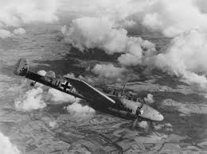
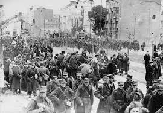
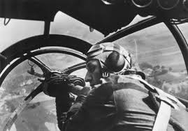

Introdução
Na madrugada de 1º de setembro de 1939, a Alemanha Nazista invadiu a Polônia, marcando o início da Segunda Guerra Mundial. Este evento histórico foi caracterizado pela estratégia da Blitzkrieg, que combinava ataques rápidos e coordenados.
Eventos Marcantes
Bombardeio de Wieluń: Um ataque brutal que destruiu a cidade e matou centenas de civis.
Ataque a Westerplatte: A primeira batalha da guerra, marcada pela resistência polonesa.
Cerco a Varsóvia: Bombardeios intensos que visaram a população civil.
A Invasão da Polônia: O Estopim da Guerra na Europa
Data e Local: 1º de setembro a 6 de outubro de 1939. A invasão, que marcou o início da Segunda Guerra Mundial no continente europeu, foi deflagrada pela Alemanha Nazista em 1º de setembro de 1939 e, posteriormente, em 17 de setembro, pela União Soviética. As ações militares se estenderam por todo o território polonês, com batalhas emblemáticas em locais como a península de Westerplatte, a cidade de Varsóvia e a fortaleza de Modlin.
A Estratégia da "Guerra-Relâmpago" (Blitzkrieg)
A campanha alemã na Polônia foi a primeira demonstração em grande escala da Blitzkrieg, uma tática militar revolucionária que visava a aniquilação rápida e decisiva das forças inimigas. A estratégia se baseava em três pilares coordenados:
- Força Aérea (Luftwaffe): A aviação desempenhou um papel crucial desde os primeiros momentos, destruindo a força aérea polonesa ainda no solo, bombardeando centros de comando, ferrovias e colunas de suprimentos para gerar caos e paralisar a mobilização inimiga.
- Forças Blindadas (Panzerwaffe): Divisões de tanques (Panzer) rompiam as linhas de frente em pontos estratégicos, penetrando profundamente no território inimigo para cercar e isolar unidades inteiras do exército polonês.
- Infantaria Motorizada: Seguindo os tanques, a infantaria motorizada consolidava os ganhos, eliminava focos de resistência e garantia a segurança das linhas de suprimento avançadas.
Essa combinação de velocidade, surpresa e poder de fogo coordenado por rádio foi avassaladora para o exército polonês, que, embora numeroso e corajoso, estava preparado para uma guerra de trincheiras, nos moldes da Primeira Guerra Mundial.
Contingente e Equipamentos
Alemanha Nazista: Mobilizou cerca de 1,5 milhão de soldados, organizados em dois grupos de exércitos. O equipamento incluía mais de 2.700 tanques, principalmente os modelos Panzer I, II, III e alguns IV, e aproximadamente 2.300 aeronaves, com destaque para os caças Messerschmitt Bf 109 e os bombardeiros de mergulho Junkers Ju 87 "Stuka", que se tornaram um símbolo de terror psicológico.
Polônia: Contava com cerca de 1 milhão de soldados, mas com equipamentos em grande parte obsoletos. Possuía menos de 900 tanques (a maioria tanquetes leves) e cerca de 400 aeronaves de combate, que foram rapidamente superadas pela Luftwaffe.
União Soviética: Invadiu pelo leste com aproximadamente 450.000 a 1 milhão de soldados (os números variam), cumprindo o pacto secreto Molotov-Ribbentrop, que dividia a Polônia entre as duas potências.
Inovações Tecnológicas e Táticas
A campanha da Polônia não foi apenas uma batalha de números, mas um marco da inovação militar. A comunicação via rádio foi fundamental para a coordenação em tempo real entre tanques, aviões e infantaria, permitindo que a Wehrmacht (forças armadas alemãs) adaptasse suas táticas rapidamente no campo de batalha. O uso de aeronaves para apoio aéreo aproximado, como os Stukas, atacando posições defensivas logo à frente das tropas terrestres, foi uma tática devastadora e inovadora.
Curiosidades e Impactos Profundos
- A "Guerra de Mentira": Apesar de terem declarado guerra à Alemanha em 3 de setembro, França e Reino Unido não lançaram uma ofensiva em larga escala para socorrer a Polônia. Este período inicial de inatividade no oeste ficou conhecido como a "Guerra de Mentira" ou "Phoney War", expondo a fragilidade das alianças e a falta de preparo ocidental.
- Terror contra Civis: A campanha foi marcada por bombardeios aéreos indiscriminados contra cidades polonesas, como Wieluń e Varsóvia. O objetivo não era apenas militar, mas também quebrar o moral da população civil, prenunciando a brutalidade que definiria o restante do conflito.
- O Pacto Secreto: Muitos foram pegos de surpresa pela invasão soviética em 17 de setembro. Ela era resultado de uma cláusula secreta no Pacto Molotov-Ribbentrop, um acordo de não agressão entre a Alemanha Nazista e a URSS que, na prática, selou o destino da Polônia.
- A Última Resistência: Mesmo após a rendição do governo, a resistência polonesa continuou. A Batalha de Kock, encerrada em 6 de outubro, é considerada a última grande batalha da campanha. O Estado Secreto Polonês e o Exército da Pátria (Armia Krajowa) se tornariam um dos maiores e mais eficazes movimentos de resistência da Europa ocupada.
Leituras Sugeridas
Para aprofundar no tema, as seguintes obras são referências essenciais:
- A Segunda Guerra Mundial por John Keegan.
- As Origens da Segunda Guerra Mundial por Richard Overy.
- Blitzkrieg: From the Rise of Hitler to the Fall of Dunkirk por Len Deighton.